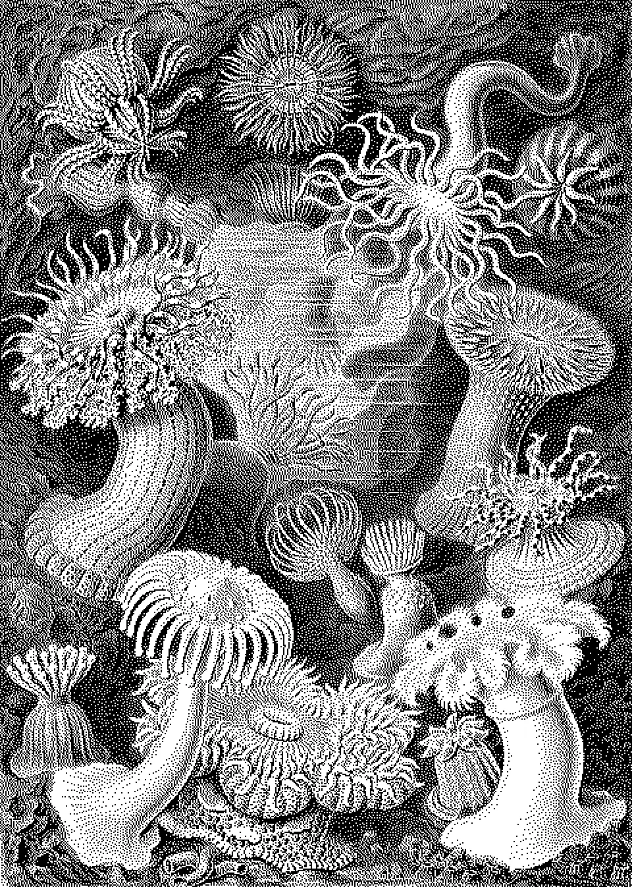
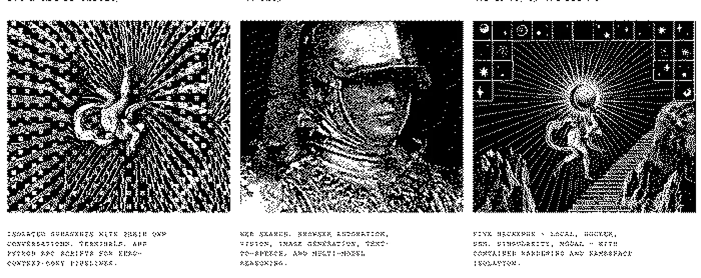
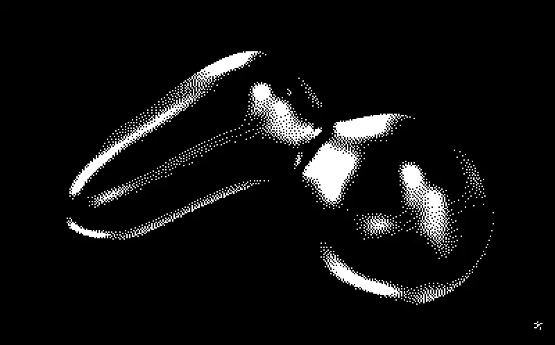
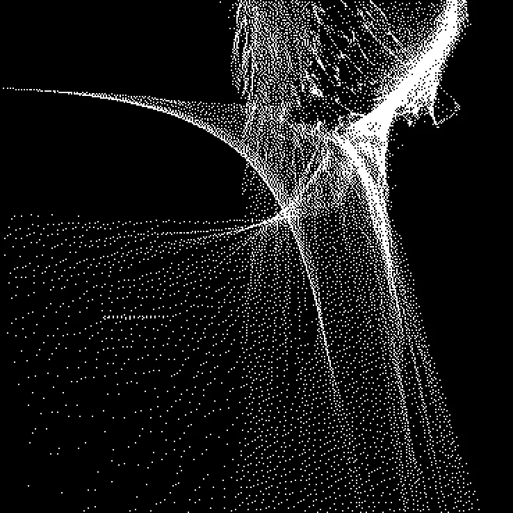
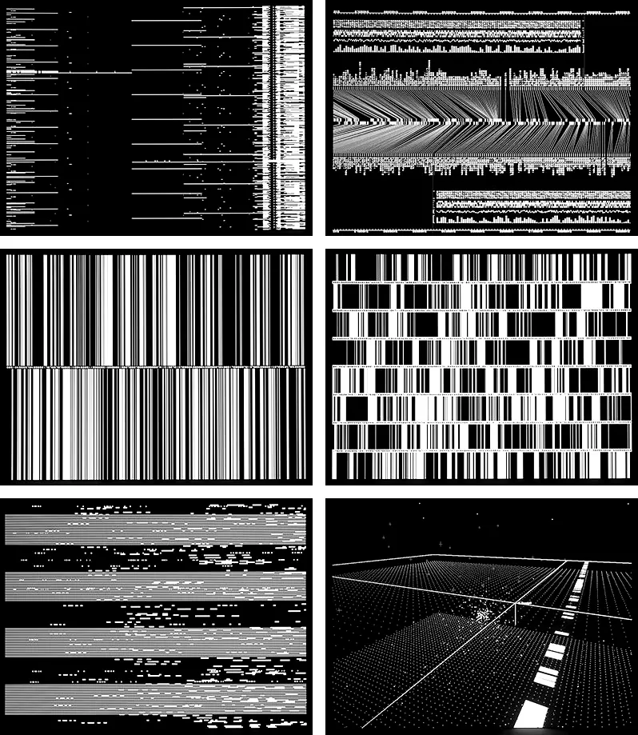

Archaic
engineering
engineering
×
Living
audio
audio
×
Cymatic
decay
decay
Direcția nu este „dark productivity”. Este o combinație controlată de laborator ocult, organism audio-reactiv și materie cognitivă care îmbătrânește vizibil.
Structura, tipografia, gravurile și conflictul dintre limbaj vechi și infrastructură modernă.
Mișcarea, reacția la input și sentimentul că sistemul are metabolism, nu doar transitions.
Forme emergente din frecvență, imperfecțiune naturală și degradare vizuală bazată pe timp.
Fiecare placă este clickabilă și duce la sursa originală. Imaginile sunt procesate monocrom pentru a testa dacă direcția rezistă fără culoare.
Nu sunt opt stiluri separate. Sunt opt sisteme de reguli care trebuie combinate într-o singură gramatică.
Knowledge base-ul arată ca un manual tehnic găsit într-o arhivă suspectă. Gravura nu e decor; este probă, mascotă, diagramă și eroare de imprimare.

Dither-ul descrie calitatea memoriei și a atenției: clar, murdar, pierdut, recuperat. Nu este un filtru global aplicat la final.

Nodurile nu sunt cercuri. Sunt membrane deformabile cu identitate, masă, tensiune și o relație fizică vizibilă cu celelalte idei.

Sunetul nu colorează vizualul. Îi schimbă tensiunea, ritmul, densitatea și forma. Nodul pare să audă, nu să danseze.

Suprafața trebuie să pară că poate fi învățată și stăpânită. Mai aproape de norns, VCV Rack și terminal decât de o aplicație de productivitate cu onboarding.
Informația poate deveni densă și severă, dar trebuie să rămână diagnostică. Ryoji Ikeda, FIELD și onformative oferă ritm, nu template.

Display-ul are personalitate și sarcasm. Body-ul mono rămâne exact, rece și ușor de scanat. Nici Inter, nici „startup friendliness”.
Feedback-ul este satisfăcător, dar nu infantil. Acțiunea lovește, se propagă și se așază în maximum 600 ms. Decay-ul operează pe ore și zile.
„Ai 14 chestii deschise. Trei sunt reale.”TRIAGE / BLUNT, NOT CRUEL
„Creierul tău nu e backlog. E o mlaștină cu index.”BRAINDUMP / SYSTEM METAPHOR
„Task-ul ăsta putrezește de 11 zile. Îl faci, îl tai sau îl minți din nou?”DECAY / CONSEQUENCE
Bibliotecă filtrabilă cu surse vizuale, implementări, documentație și GitHub. Click pe card deschide sursa principală; butoanele de jos duc direct la docs/demo/code.
Trei niveluri de implementare. Recomandarea pragmatică este să începi cu 2D organic și să escaladezi shader-ele doar unde produc valoare vizibilă.
Cel mai bun punct de start pentru un graph dens, interactiv și performant.
Pentru selected clusters, hero states și forme care se contopesc real.
Explorare foarte rapidă înainte de a bloca arhitectura web.
Acestea sunt semnale de drift. Dacă apar în mockup, direcția a revenit la productivitate SaaS standard.
Fără blur, translucent cards, glow borders sau pseudo-depth corporate.
Nu toate lucrurile au aceeași cutie, aceeași rază și aceeași umbră.
Nicio neutralitate startup. Display expresiv + mono tehnic.
Nodurile sunt membrane, nu avatar circles; conexiunile sunt tendrils, nu straight lines.
Fără confetti, daily flames, badges și guilt loops mascate în gamification.
Goblin-ul nu „celebrează progresul”. Observă, taie, amintește și provoacă.
Nu un force graph decorativ de cercuri. Relațiile trebuie să aibă greutate și viață.
Nu 12 KPI cards. Un câmp cognitiv cu un lucru dominant și stări contextuale.
Mișcare doar când semnifică activitate, tensiune, decay sau feedback.